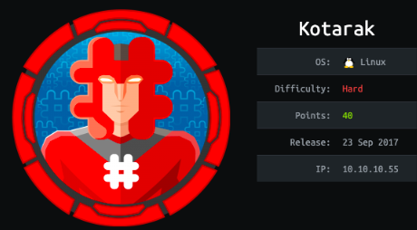

Linux Boxes
kotarak
nmap
all ports
targeted ports
:8080
:8009
:60000
kotarak web hosting page
mess with path
burp
localhost
wfuzz
wfuzz all ports of victim machine's localhost
:22
:90
:110
:200
:320
:888
?doc=is
?doc=backup SSRF
?doc=blah
:60000
initial foothold
Tomcat login
war upload
reverse shell
find files in home directory
exfil .bin file
impacket
crack some ntlm hashes
hashcat
crackstation (online)
privesc to atanis
user.txt
app.log
arp -a
priv esc
out of date wget
set up nc listener on port 80
exploit
part 1: prepare malicious .wgetrc file on attack machine
part 2: set up ftp server on port 21 (w/ authbind)
part 3: exploit.py
root
user/root
lessons learned
kotarak
